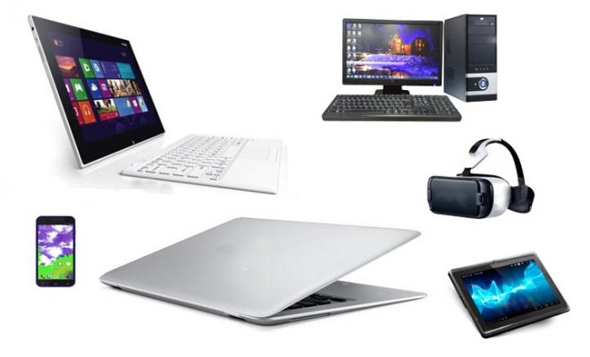

The periode of the fifth generation is 1980 till date.The fifth genaration computer system (FGCS) was an initiative by Japan's Ministry of the international Trade and Industry (MITI) begun in 1982,to create computing using massively parallel computing/ processing. It was to be a result massive goverment industry research projectin Japan during the 1980s. I"epoch-making computer". it is aimed to create an during In this generation ,VLSI teachnology become ULSI (Ultra Large Scale Intergration) technology,resulting in the production microprocessor chips having ten milion electronic components.

The genration of fifth is bassed on hardware of pararallel procesing hardware and Artificial interligence software. and also,the speed is extremely high fifth generation coputers.this generation is still in a developmental stage.Some of these technolagies are beginning emerge and be used such as voice recognization.The Al is the emerging branch in the computer science, which interperts the means and methode of the making computer think like human bings. and also,All of the high level languages are used in this generation. (as the examples C and C++, Java,Net etc.,)
Al is reality made possiable by using parallel processing and superconductors.Leaning to the the future ,computers will be radically tranformed again by quantum computation, molecular and nano technolsgy.The essence of the this genaration will be used these technologies to ultimately create machines which can process and respond to natural language , and have caperbility to lern and organise themselves.
The term of the fifth generation was intend to the convey of system as being leap beyond existing machines.When the history of the computer is studied ,you able to understand that the "vacume tubes" were used as a cicuitry and magnetic drums for memory in first genaration.then the second genaration then, "Transitors" and "Diodes" were used in the second genaration and also,"Intergreted curcuite " and "microprocessors" were used in the third and forth genarations.Then The genaration of fifth computers are in devolopment stage which is based on artificial interligence.
the goal of the fifth genaration is to develop devicewhich could respond toa natural language input and are capble of learning and self recognizarion.
Populer Computer Devices of Five Genaration

Charasteristics of fifth genaration computers